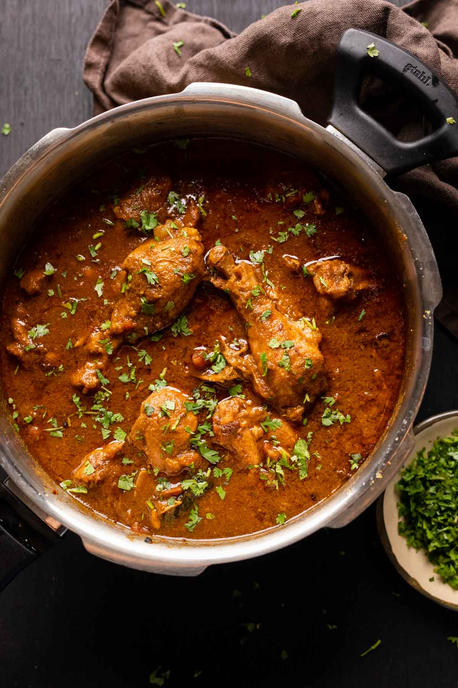
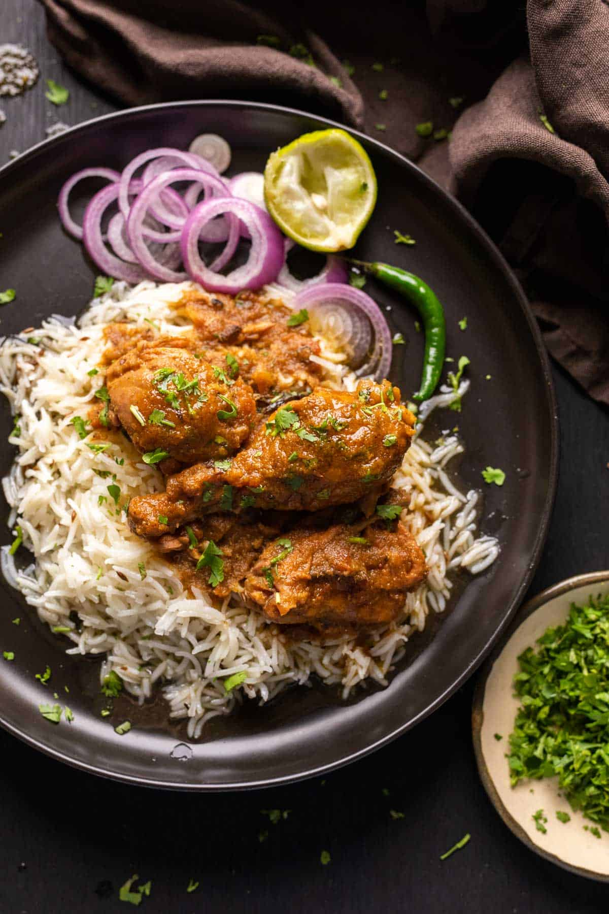

Chicken Curry

About Chicken Curry
Dhabas, for the uninitiated are roadside restaurants scattered all over the country, and their food is unique. Hell, the experience is unique and is one you must have. Small mud shacks, with only chaarpai's (rope and wooden cots) and a wooden plank for a table, you'll find them as you drive along the highway. They are usually patronized by truck drivers and budget travellers who are looking for food which reminds them of home. Growing up, the highlight of any road trip was a stopover at a dhaba for steaming hot, spicy dhaba style chicken curry, dal fry or dal makhani and tandoori rotis fresh from the oven to mop it all up. These soul satisfying meals will always be etched on to my heart!
Unlike my other recipes, this one's slightly time consuming because masala is ground and cooked till it's color changes. This is characteristic of most Indian curries, and the slow cooking process or bhuno is what lends dishes a unique flavor.
Ingredients
- 1 kg Chicken skinless, bone-in whole chicken cut into medium sized pieces (referred to as curry cut in India)
For the marinade:
- 2 tablespoons Ginger Garlic Paste
- 1 Juice of lime
- 1 tablespoon Salt
For the curry:
-
- ¼ cup Mustard Oil see note 2
- 4 medium Onions
- 10 cloves Garlic
- 1½ inches Ginger
- 3 - 4 Green Chilies use Serrano Peppers as replacement, adjust the spice as required
- 1 tablespoon Cumin Seeds
- 2 Bay leaves
- ½ Cinnamon stick Stick
- 4 - 5 Cardamoms
- 8 - 10 Peppercorns
- 4 - 5 Cloves
- 4 medium Tomatoes finely chopped
- ½ teaspoon Turmeric Powder
- 1 teaspoon Red Chili Powder optional; adjust the spice as required
- 2 tablespoons Coriander Powder
- 1 teaspoon garam masala Powder
- 1 teaspoon Salt
For tempering:
- 1 tablespoon Ghee or Oil
- 1 tablespoon Butter
- 2 Green Chilies slit lengthwise
- ½ inch Ginger julienned
- 2 tablespoon Coriander for garnishing
Steps
- Heat oil in a deep pan or kadai over medium heat. Add cumin seeds and let them splutter.
- Add the finely chopped onions and sauté until they turn golden brown.
- Stir in the ginger-garlic paste and green chilies, and sauté for a few minutes until the raw smell disappears.
- Add the chopped tomatoes and cook until they become soft and the oil starts to separate.
- Add the turmeric, red chili powder, coriander powder, and salt. Stir well and cook for a few more minutes.
-
Now, add the chicken pieces and cook them until they turn white on all sides.
-
Reduce the heat and add yogurt, stirring continuously to avoid curdling. Cook for a few minutes until the chicken is well coated with the yogurt and the oil starts to separate again.
-
Add water as needed to achieve your desired curry consistency. Cover the pan and let the chicken simmer for about 15-20 minutes, or until it's cooked through.
- Sprinkle garam masala and give it a final stir.
- Garnish with fresh coriander leaves.
